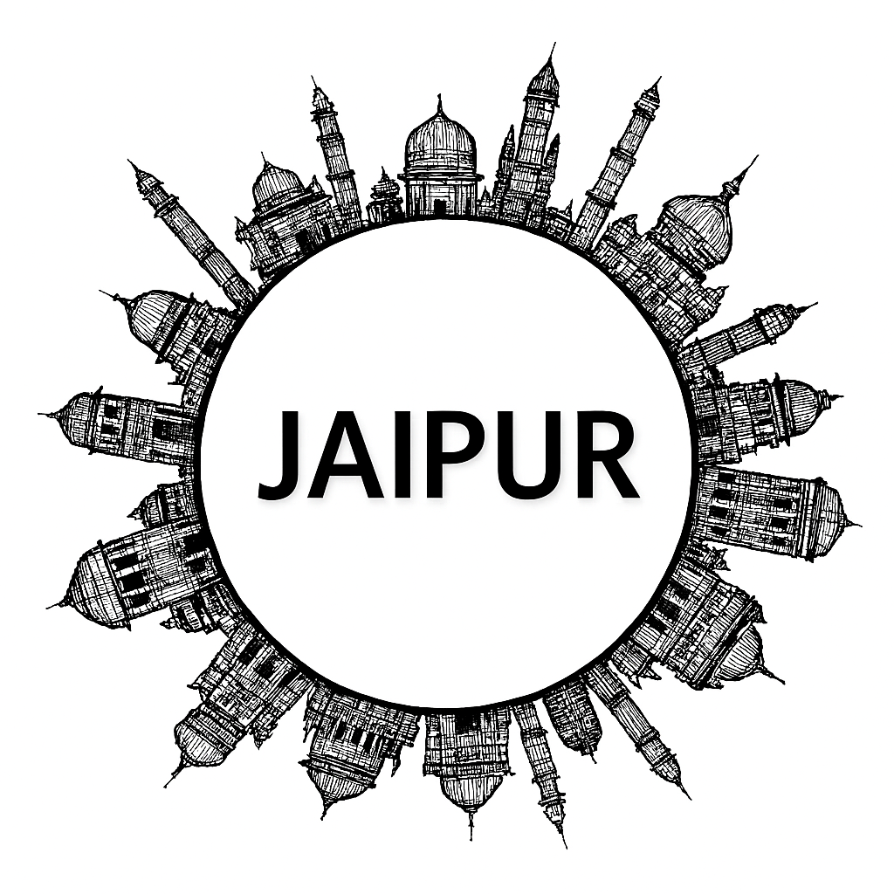

Jaipur
Jaipur, the capital of Rajasthan, famously known as the Pink City, is a dazzling blend of royal heritage, culture, and vibrant traditions. Founded in 1727 by Maharaja Sawai Jai Singh II, the city is adorned with architectural marvels such as Amber Fort, Hawa Mahal, and the UNESCO-listed Jantar Mantar. The grand City Palace reflects the opulence of the Rajput rulers, while Jal Mahal and Nahargarh Fort add natural charm and panoramic beauty. Jaipur’s bustling bazaars brim with handicrafts, gemstones, and textiles, showcasing its artistic spirit. Festivals like Teej and Gangaur highlight its cultural richness, while the Jaipur Literature Festival brings global recognition. Today, Jaipur thrives as a gateway to Rajasthan’s desert landscapes, blending regal legacy with modern vibrancy, making it a unique destination of history, art, and tradition.
Jaipur, famously known as the “Pink City,” is a dazzling blend of royal heritage and vibrant modern life. Founded in 1727 by Maharaja Sawai Jai Singh II, it is celebrated for its architectural marvels like the Amber Fort, Hawa Mahal, City Palace, and Jantar Mantar—each reflecting the grandeur of Rajputana history. The city’s bustling bazaars overflow with colorful textiles, jewelry, and handicrafts, while its cuisine offers delights such as dal baati churma and ghevar. Jaipur is also renowned for its cultural festivals, especially the grand Navratri garba nights and the Jaipur Literature Festival, which draw visitors from across the globe. With its regal past, artistic traditions, and dynamic present, Jaipur stands as a shining jewel of Rajasthan and one of India’s most captivating destinations.
Peaceful Nature Spots
Historical Places (Itihasik Jagah)
Local Markets (Shopping ke liye)
Famous Festivals
Famous Local Food Items
More Details
Gallery